这一节为什么这样简化
这里的简化不是删掉关键概念，而是把体系结构细节压到够用：先建立并行判断、CPU/GPU 匹配、GPU 重复计算单元和 CUDA 编程入口。warp、shared memory、coalescing、PTX 等内容不提前展开，避免第一节就变成硬件名词堆。
PPT 故事线
- 先用生活化并行现象建立感觉，再区分串行、并发和并行。
- 再把并行放回计算机，说明核心、线程、CPU、GPU 的任务匹配。
- 接着看 GPU 不是一个大核心，而是很多重复计算单元。
- 最后落到 CUDA、
.cu、nvcc 和 AI 任务为什么需要并行。
逐页讲课大纲
P01 · "众人拾柴火焰高"
课程边界
P01 · "众人拾柴火焰高"
可以先说：“这一页先把‘"众人拾柴火焰高"’讲清楚，后面的内容都从这个判断接出去。” 用“众人拾柴火焰高”开场，说明这门课关心的不是单个执行者更努力，而是怎样把可以拆开的工作交给很多执行者一起做，并把这个直觉落到 CUDA 和 GPU 编程。
讲的时候按这条线推进：开场直接说下节才写 CUDA，这一节先建立后面代码会用到的词和判断。 这里只把 AI 当作并行需求的现实动机，不展开神经网络算法，也不进入性能账本。 这里会碰到的概念有 并行, CUDA。
讲画面时，封面用“众人拾柴”的视觉隐喻建立并行主题，作用是先让学生进入“一起做会改变规模”的感觉。 不要让学生只看装饰，要指着图、代码或表格说明它在支撑哪一个判断。
这里要收住边界：不要把第一节讲成完整体系结构课，也不要让学生误以为没写代码就不重要。 收尾时可以说：“这页先解决到这里，下一页我们把问题接到课程导航。”
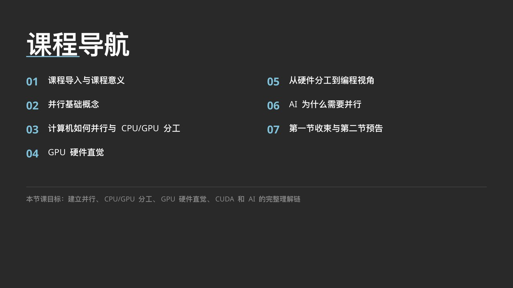
P02 · 课程导航
课程边界
P02 · 课程导航
可以先说：“今天不是把术语摊开背一遍，我们按这条路线一点点把问题讲顺。” 把第一节拆成课程意义、并行概念、CPU/GPU 分工、GPU 硬件直觉、CUDA 入口、AI 动机和收束预告七段，让学生知道这节课先搭地图，下一节才正式写程序。
讲的时候按这条线推进：开场直接说下节才写 CUDA，这一节先建立后面代码会用到的词和判断。 这里会碰到的概念有 并行, CPU / GPU 分工。
讲画面时，导航页把第一节拆成七段，作用是让导师控制节奏，避免一开始就陷入术语。 不要让学生只看装饰，要指着图、代码或表格说明它在支撑哪一个判断。
这里要收住边界：不要把第一节讲成完整体系结构课，也不要让学生误以为没写代码就不重要。 收尾时可以说：“课程导航这件事先收住，下一段我们换一个层级继续看。”
P03 · 01
课程边界
P03 · 01
可以先说：“从这里开始进入课程边界这一段，先记住我们要解决的问题，再看下一页细节。” 进入课程导入，不急着讲技术名词，先回答这门课到底在训练什么能力：看到一个问题时，能判断它能不能并行、适不适合 GPU、为什么会用 CUDA。
讲的时候按这条线推进：开场直接说下节才写 CUDA，这一节先建立后面代码会用到的词和判断。 这里不需要额外展开新术语，重点是把页面角色讲清楚。
讲画面时，章节页只负责切入课程意义，画面降低信息量，让学生知道现在不是代码段。 不要让学生只看装饰，要指着图、代码或表格说明它在支撑哪一个判断。
这里要收住边界：不要把第一节讲成完整体系结构课，也不要让学生误以为没写代码就不重要。 收尾时可以说：“这页先解决到这里，下一页我们把问题接到课程简介与前置要求。”
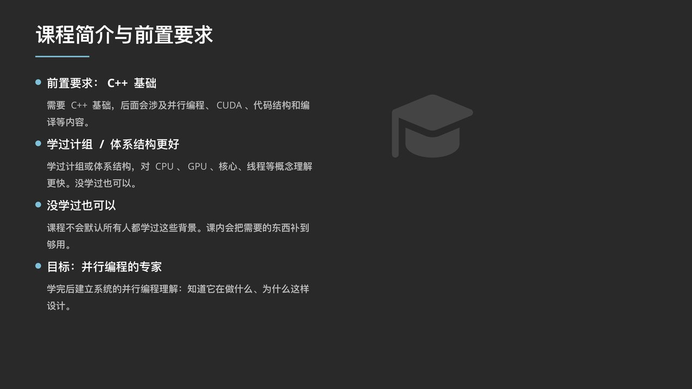
P04 · 课程简介与前置要求
课程边界
P04 · 课程简介与前置要求
可以先说：“这一页先把‘课程简介与前置要求’讲清楚，后面的内容都从这个判断接出去。” 把前置要求说清楚：C++ 是必须能读的基础，计算机组成和体系结构会帮助理解 CPU、GPU、核心、线程，但没学过也可以先按够用直觉跟上。
讲的时候按这条线推进：开场直接说下节才写 CUDA，这一节先建立后面代码会用到的词和判断。 这里会碰到的概念有 并行, 核心, 线程, CPU / GPU 分工, CUDA。
讲画面时，前置要求页用分栏说明 C++、计组和 GPU 背景，作用是把学习门槛讲清但不吓退学生。 不要让学生只看装饰，要指着图、代码或表格说明它在支撑哪一个判断。
这里要收住边界：不要把第一节讲成完整体系结构课，也不要让学生误以为没写代码就不重要。 收尾时可以说：“这页先解决到这里，下一页我们把问题接到学完这门课你能得到什么。”
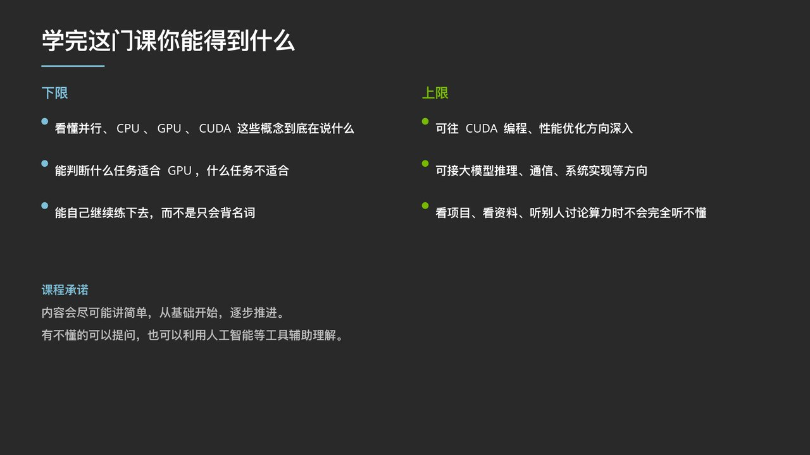
P05 · 学完这门课你能得到什么
课程边界
P05 · 学完这门课你能得到什么
可以先说：“这一页先把‘学完这门课你能得到什么’讲清楚，后面的内容都从这个判断接出去。” 把学习收益分成下限和上限：下限是看懂并行、CPU、GPU、CUDA 在说什么，上限是能继续自己练习和判断任务是否适合 GPU，而不是只记几个名词。
讲的时候按这条线推进：开场直接说下节才写 CUDA，这一节先建立后面代码会用到的词和判断。 这里会碰到的概念有 并行, CPU / GPU 分工, CUDA。
讲画面时，收获页把下限和上限分开，作用是告诉导师这节课训练的是判断能力，不是术语记忆。 不要让学生只看装饰，要指着图、代码或表格说明它在支撑哪一个判断。
这里要收住边界：不要把第一节讲成完整体系结构课，也不要让学生误以为没写代码就不重要。 收尾时可以说：“学完这门课你能得到什么这件事先收住，下一段我们换一个层级继续看。”
P06 · 02
并行基础概念
P06 · 02
可以先说：“从这里开始进入并行基础概念这一段，先记住我们要解决的问题，再看下一页细节。” 切入并行基础概念，先告诉学生接下来不从定义开始，而是先从现象建立感觉，再把感觉压成串行、并发、并行这些词。
讲的时候按这条线推进：每讲完一个定义就让学生判断一个例子，尤其要分清并发和真正并行。 这里会碰到的概念有 并行。
讲画面时，这一页是“并行基础概念”的转场页，画面只负责把学生带入下一段，不需要在这里讲新知识。 不要让学生只看装饰，要指着图、代码或表格说明它在支撑哪一个判断。
这里要收住边界：并行不是任务数量多，而是任务之间能不能拆开、能不能少依赖。 收尾时可以说：“这页先解决到这里，下一页我们把问题接到直观感受：一个一个做 vs 很多一起做。”
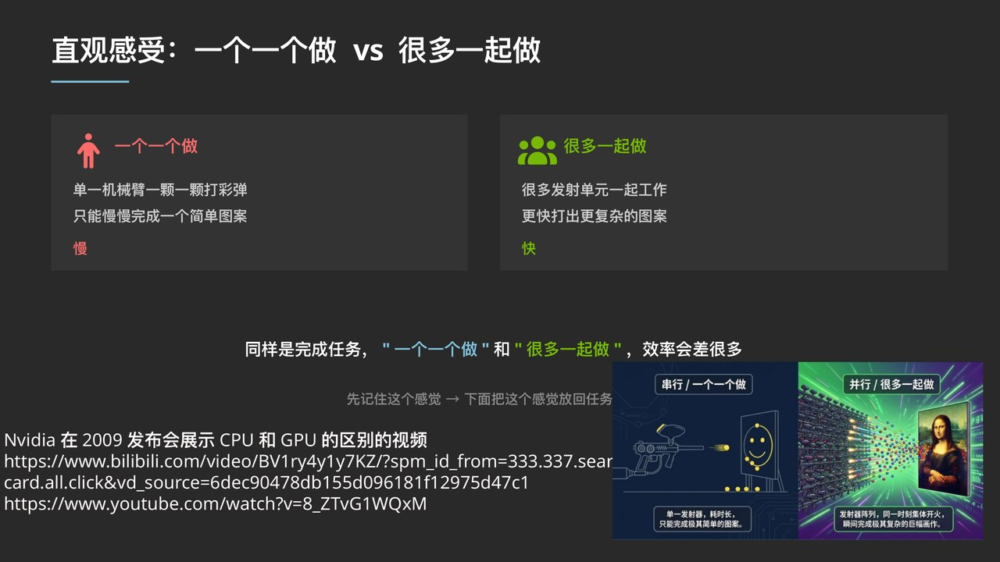
P07 · 直观感受：一个一个做 vs 很多一起做
并行基础概念
P07 · 直观感受：一个一个做 vs 很多一起做
可以先说：“这一页先把‘直观感受：一个一个做 vs 很多一起做’讲清楚，后面的内容都从这个判断接出去。” 用一个一个做和很多一起做的画面对比讲并行的第一直觉：执行单元数量和组织方式改变以后，完成同类工作的速度和规模都会变。
讲的时候按这条线推进：每讲完一个定义就让学生判断一个例子，尤其要分清并发和真正并行。 这里不需要额外展开新术语，重点是把页面角色讲清楚。
讲画面时，机械臂/彩弹对照用于把串行和并行变成可观察现象，先有直觉再给定义。 不要让学生只看装饰，要指着图、代码或表格说明它在支撑哪一个判断。
这里要收住边界：并行不是任务数量多，而是任务之间能不能拆开、能不能少依赖。 收尾时可以说：“这页先解决到这里，下一页我们把问题接到单任务里的串行与并行。”
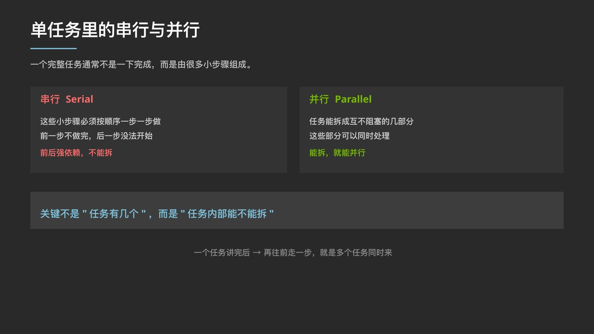
P08 · 单任务里的串行与并行
并行基础概念
P08 · 单任务里的串行与并行
可以先说：“这一页先把‘单任务里的串行与并行’讲清楚，后面的内容都从这个判断接出去。” 讲单个任务内部也可能有并行空间：如果步骤之间强依赖就只能串行，如果能拆成互不阻塞的小块，就可以并行推进。
讲的时候按这条线推进：每讲完一个定义就让学生判断一个例子，尤其要分清并发和真正并行。 这里会碰到的概念有 串行, 并行。
讲画面时，串行与并行的任务拆分图用于说明依赖关系，重点不是快慢，而是步骤之间能不能同时做。 不要让学生只看装饰，要指着图、代码或表格说明它在支撑哪一个判断。
这里要收住边界：并行不是任务数量多，而是任务之间能不能拆开、能不能少依赖。 收尾时可以说：“这页先解决到这里，下一页我们把问题接到多任务里的串行、并发与并行。”
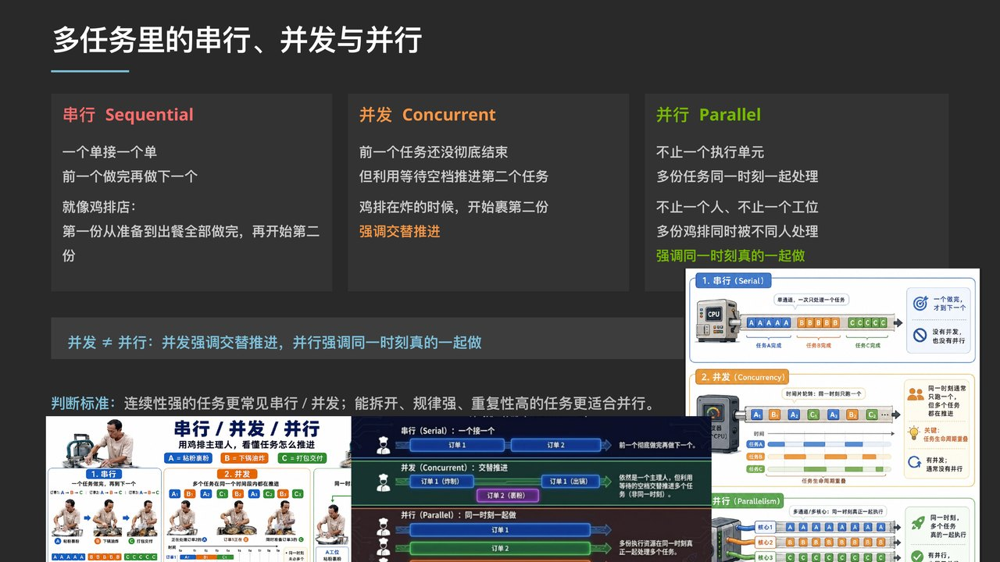
P09 · 多任务里的串行、并发与并行
并行基础概念
P09 · 多任务里的串行、并发与并行
可以先说：“这一页先把‘多任务里的串行、并发与并行’讲清楚，后面的内容都从这个判断接出去。” 把多任务场景里的串行、并发和并行分开：串行是一个接一个，并发是交替推进，并行是同一时刻真的有多个执行者一起做。
讲的时候按这条线推进：每讲完一个定义就让学生判断一个例子，尤其要分清并发和真正并行。 这里会碰到的概念有 串行, 并发, 并行。
讲画面时，串行、并发、并行对照图用于拆掉“交替推进就是并行”的误解。 不要让学生只看装饰，要指着图、代码或表格说明它在支撑哪一个判断。
这里要收住边界：并行不是任务数量多，而是任务之间能不能拆开、能不能少依赖。 收尾时可以说：“多任务里的串行、并发与并行这件事先收住，下一段我们换一个层级继续看。”
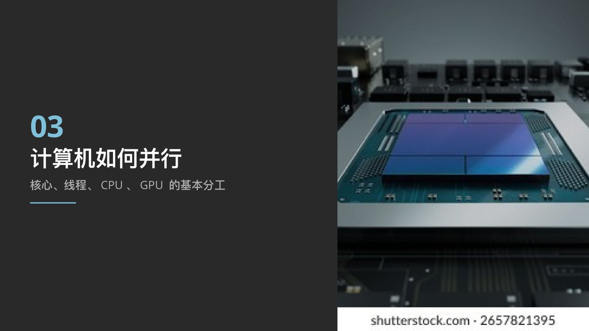
P10 · 03
计算机里的并行
P10 · 03
可以先说：“从这里开始进入计算机里的并行这一段，先记住我们要解决的问题，再看下一页细节。” 从生活直觉切回计算机，告诉学生下面会用核心和线程这两个够用概念解释 CPU/GPU 为什么会有不同分工。
讲的时候按这条线推进：讲 CPU/GPU 时反复回到任务类型：复杂控制交给 CPU，大量相似计算交给 GPU。 这里会碰到的概念有 并行, 核心, 线程, CPU / GPU 分工。
讲画面时，这一页是“计算机里的并行”的转场页，画面只负责把学生带入下一段，不需要在这里讲新知识。 不要让学生只看装饰，要指着图、代码或表格说明它在支撑哪一个判断。
这里要收住边界：不要说 GPU 天然更强；要说不同任务匹配不同硬件。 收尾时可以说：“这页先解决到这里，下一页我们把问题接到计算机如何并行：核心与线程。”
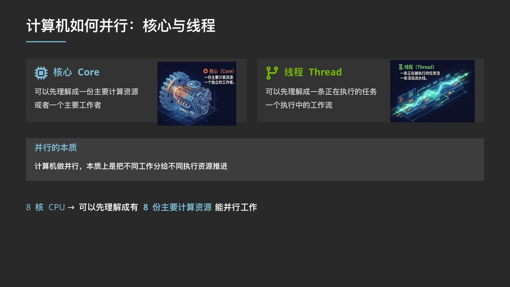
P11 · 计算机如何并行：核心与线程
计算机里的并行
P11 · 计算机如何并行：核心与线程
可以先说：“这一页先把‘计算机如何并行：核心与线程’讲清楚，后面的内容都从这个判断接出去。” 讲核心和线程的最小直觉：核心先理解成主要计算资源，线程理解成一条正在执行的任务线，计算机并行就是把工作分给多个执行资源。
讲的时候按这条线推进：讲 CPU/GPU 时反复回到任务类型：复杂控制交给 CPU，大量相似计算交给 GPU。 这里会碰到的概念有 并行, 核心, 线程。
讲画面时，核心和线程页把抽象执行资源画成工作者和任务线，作用是为后面的 GPU 线程直觉铺路。 不要让学生只看装饰，要指着图、代码或表格说明它在支撑哪一个判断。
这里要收住边界：不要说 GPU 天然更强；要说不同任务匹配不同硬件。 收尾时可以说：“这页先解决到这里，下一页我们把问题接到CPU 并行和 GPU 并行的常见场景。”
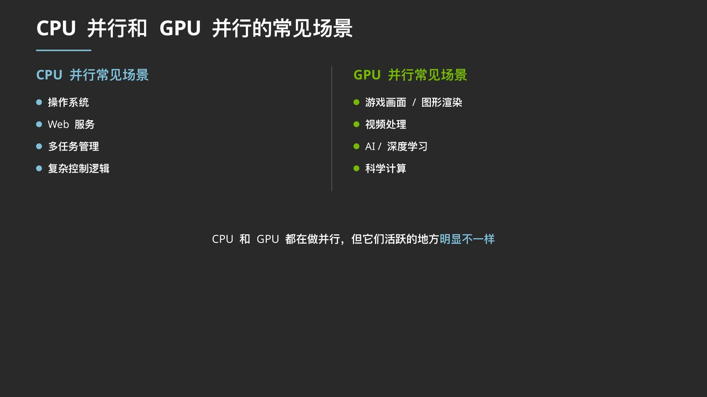
P12 · CPU 并行和 GPU 并行的常见场景
计算机里的并行
P12 · CPU 并行和 GPU 并行的常见场景
可以先说：“这一页先把‘CPU 并行和 GPU 并行的常见场景’讲清楚，后面的内容都从这个判断接出去。” 用现实场景建立 CPU 并行和 GPU 并行的分布感：CPU 常见于系统管理、Web 服务和复杂控制，GPU 常见于图形、视频、AI 和科学计算。
讲的时候按这条线推进：讲 CPU/GPU 时反复回到任务类型：复杂控制交给 CPU，大量相似计算交给 GPU。 这里会碰到的概念有 并行, CPU / GPU 分工。
讲画面时，场景对照页用 OS、Web、图形、AI 等例子说明 CPU/GPU 分工来自任务形态。 不要让学生只看装饰，要指着图、代码或表格说明它在支撑哪一个判断。
这里要收住边界：不要说 GPU 天然更强；要说不同任务匹配不同硬件。 收尾时可以说：“这页先解决到这里，下一页我们把问题接到CPU 是怎么工作的。”
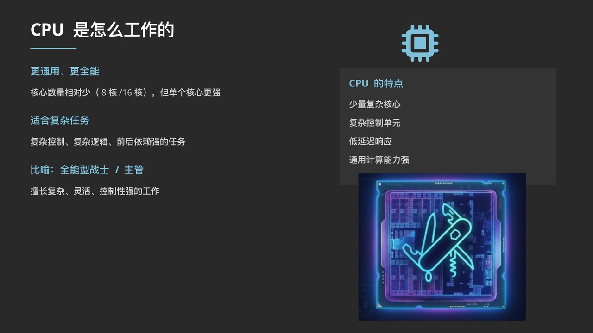
P13 · CPU 是怎么工作的
计算机里的并行
P13 · CPU 是怎么工作的
可以先说：“这一页先把‘CPU 是怎么工作的’讲清楚，后面的内容都从这个判断接出去。” 讲 CPU 的工作方式：核心数量相对少但单核强，通用性和控制能力强，适合复杂逻辑、分支多、前后依赖强的任务。
讲的时候按这条线推进：讲 CPU/GPU 时反复回到任务类型：复杂控制交给 CPU，大量相似计算交给 GPU。 这里会碰到的概念有 核心, CPU / GPU 分工。
讲画面时，CPU 页突出强单核和复杂控制，作用是避免把 CPU 讲成“落后硬件”。 不要让学生只看装饰，要指着图、代码或表格说明它在支撑哪一个判断。
这里要收住边界：不要说 GPU 天然更强；要说不同任务匹配不同硬件。 收尾时可以说：“这页先解决到这里，下一页我们把问题接到GPU 是怎么工作的。”
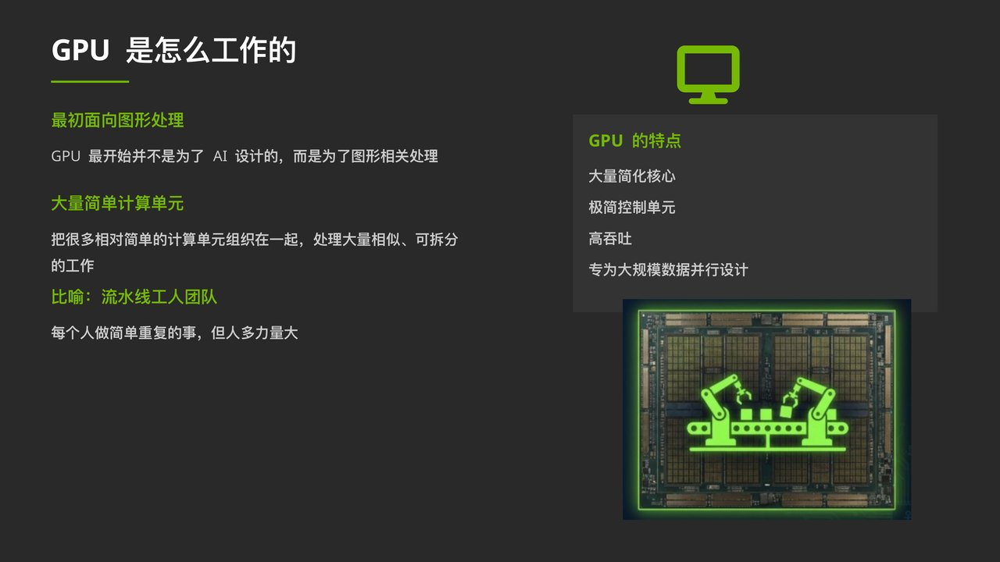
P14 · GPU 是怎么工作的
计算机里的并行
P14 · GPU 是怎么工作的
可以先说：“这一页先把‘GPU 是怎么工作的’讲清楚，后面的内容都从这个判断接出去。” 讲 GPU 的工作方式：最初面向图形处理，把大量相对简单的计算单元组织起来，适合大量相似、可拆分、重复性强的工作。
讲的时候按这条线推进：讲 CPU/GPU 时反复回到任务类型：复杂控制交给 CPU，大量相似计算交给 GPU。 这里只把 AI 当作并行需求的现实动机，不展开神经网络算法，也不进入性能账本。 这里会碰到的概念有 CPU / GPU 分工, Arithmetic Intensity。
讲画面时，GPU 页突出图形起源和大量简单单元，作用是解释为什么它后来适合 AI 数值计算。 不要让学生只看装饰，要指着图、代码或表格说明它在支撑哪一个判断。
这里要收住边界：不要说 GPU 天然更强；要说不同任务匹配不同硬件。 收尾时可以说：“这页先解决到这里，下一页我们把问题接到CPU 和 GPU：不是强弱，而是匹配。”
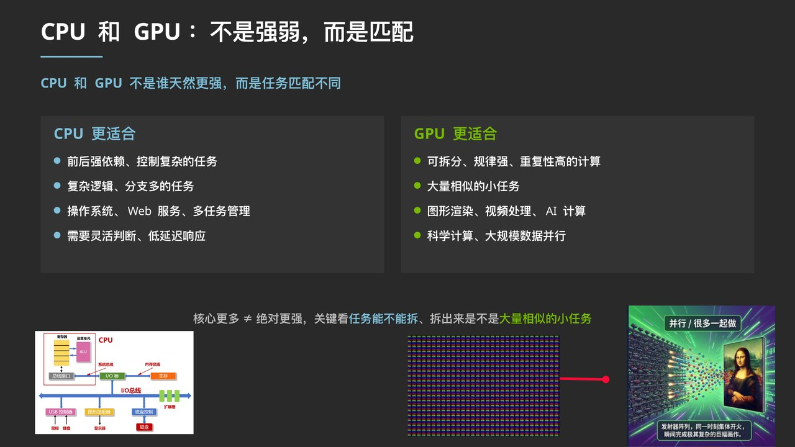
P15 · CPU 和 GPU：不是强弱，而是匹配
计算机里的并行
P15 · CPU 和 GPU：不是强弱，而是匹配
可以先说：“这一页先把‘CPU 和 GPU：不是强弱，而是匹配’讲清楚，后面的内容都从这个判断接出去。” 把 CPU/GPU 分工收束成任务匹配：不是 GPU 一定比 CPU 强，而是复杂控制更适合 CPU，大量相似计算更适合 GPU。
讲的时候按这条线推进：讲 CPU/GPU 时反复回到任务类型：复杂控制交给 CPU，大量相似计算交给 GPU。 这里会碰到的概念有 CPU / GPU 分工。
讲画面时，匹配页承担纠偏作用：把“谁更强”改成“什么任务更匹配”。 不要让学生只看装饰，要指着图、代码或表格说明它在支撑哪一个判断。
这里要收住边界：不要得出 GPU 一定强于 CPU 的结论；始终回到任务是否可拆、是否相似。 收尾时可以说：“CPU 和 GPU：不是强弱，而是匹配这件事先收住，下一段我们换一个层级继续看。”
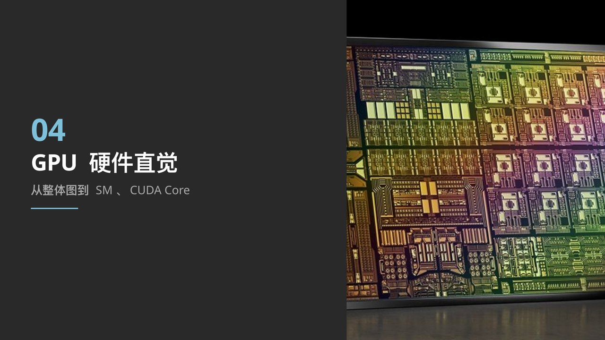
P16 · 04
GPU 硬件直觉
P16 · 04
可以先说：“从这里开始进入GPU 硬件直觉这一段，先记住我们要解决的问题，再看下一页细节。” 切入 GPU 硬件直觉，说明下面只看整体层级，不要求学生记完所有硬件结构名。
讲的时候按这条线推进：只要求记住 SM 是较大的工作单元，CUDA Core 是更细的计算单元。 讲硬件名词时只讲到支撑后续 CUDA 直觉的程度，不提前打开 warp、memory hierarchy 或性能细节。 这里会碰到的概念有 核心, CPU / GPU 分工, SM, CUDA Core, CUDA。
讲画面时，这一页是“GPU 硬件直觉”的转场页，画面只负责把学生带入下一段，不需要在这里讲新知识。 不要让学生只看装饰，要指着图、代码或表格说明它在支撑哪一个判断。
这里要收住边界：CUDA Core 不能和 CPU core 一比一比较，这里只建立 GPU 靠大量单元工作的直觉。 收尾时可以说：“这页先解决到这里，下一页我们把问题接到GPU 不是一个大核心，而是很多重复单元组成。”
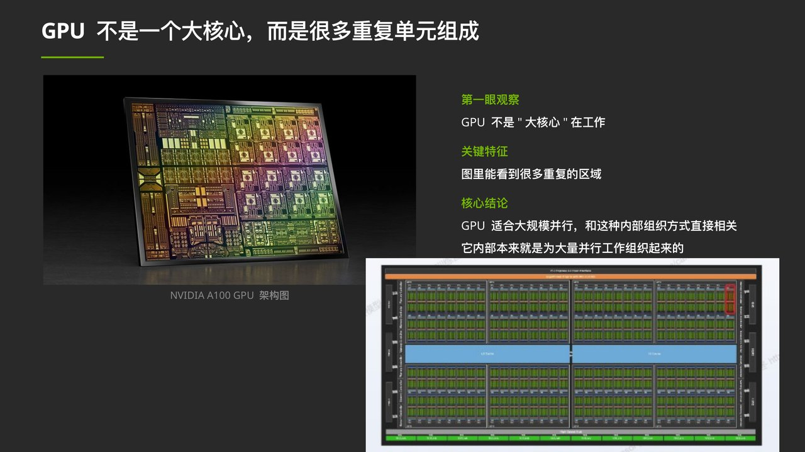
P17 · GPU 不是一个大核心，而是很多重复单元组成
GPU 硬件直觉
P17 · GPU 不是一个大核心，而是很多重复单元组成
可以先说：“这一页先把‘GPU 不是一个大核心，而是很多重复单元组成’讲清楚，后面的内容都从这个判断接出去。” 看 A100 架构图时只抓一个观察：GPU 不是一个大核心独自工作，而是由很多重复块组成，这对应它擅长大规模并行。
讲的时候按这条线推进：只要求记住 SM 是较大的工作单元，CUDA Core 是更细的计算单元。 这里会碰到的概念有 并行, 核心, CPU / GPU 分工。
讲画面时，A100 架构图只让学生观察重复结构，作用是建立 GPU 不是一个大核心的第一印象。 不要让学生只看装饰，要指着图、代码或表格说明它在支撑哪一个判断。
这里要收住边界：CUDA Core 不能和 CPU core 一比一比较；本节不展开 warp 和 memory hierarchy。 收尾时可以说：“这页先解决到这里，下一页我们把问题接到放大其中一个块：认识 SM。”
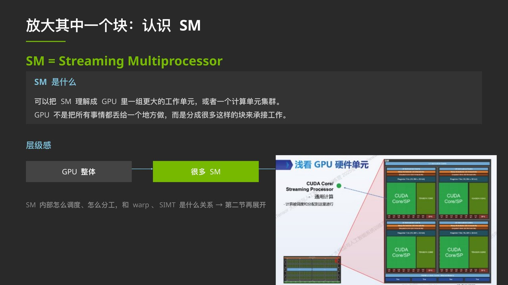
P18 · 放大其中一个块：认识 SM
GPU 硬件直觉
P18 · 放大其中一个块：认识 SM
可以先说：“这一页先把‘放大其中一个块：认识 SM’讲清楚，后面的内容都从这个判断接出去。” 把重复块命名为 SM，可以先理解成 GPU 里更大的工作单元或计算单元集群，很多工作会被分配到多个 SM 上。
讲的时候按这条线推进：只要求记住 SM 是较大的工作单元，CUDA Core 是更细的计算单元。 讲硬件名词时只讲到支撑后续 CUDA 直觉的程度，不提前打开 warp、memory hierarchy 或性能细节。 这里会碰到的概念有 CPU / GPU 分工, SM。
讲画面时，SM 放大页把大架构缩到一个可讨论的工作单元，暂不展开 warp/shared memory。 不要让学生只看装饰，要指着图、代码或表格说明它在支撑哪一个判断。
这里要收住边界：CUDA Core 不能和 CPU core 一比一比较；本节不展开 warp 和 memory hierarchy。 收尾时可以说：“这页先解决到这里，下一页我们把问题接到CUDA Core：更细粒度的计算单元。”
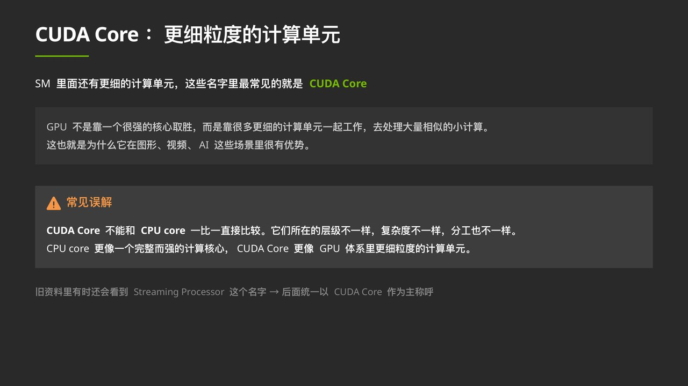
P19 · CUDA Core：更细粒度的计算单元
GPU 硬件直觉
P19 · CUDA Core：更细粒度的计算单元
可以先说：“这一页先把‘CUDA Core：更细粒度的计算单元’讲清楚，后面的内容都从这个判断接出去。” 再往 SM 内部走一层，认识 CUDA Core 作为更细粒度的计算单元，同时立刻强调它不能和 CPU core 一比一类比。
讲的时候按这条线推进：只要求记住 SM 是较大的工作单元，CUDA Core 是更细的计算单元。 这里只把 AI 当作并行需求的现实动机，不展开神经网络算法，也不进入性能账本。 这里会碰到的概念有 核心, CPU / GPU 分工, SM, CUDA Core, CUDA。
讲画面时，CUDA Core 页把更细粒度的计算单元点出来，作用是解释 GPU 的并行规模来自许多重复单元。 不要让学生只看装饰，要指着图、代码或表格说明它在支撑哪一个判断。
这里要收住边界：CUDA Core 不能和 CPU core 一比一比较，这里只建立 GPU 靠大量单元工作的直觉。 收尾时可以说：“CUDA Core：更细粒度的计算单元这件事先收住，下一段我们换一个层级继续看。”
P20 · 05
硬件到编程入口
P20 · 05
可以先说：“从这里开始进入硬件到编程入口这一段，先记住我们要解决的问题，再看下一页细节。” 从硬件视角转到编程视角，告诉学生现在要回答：既然 GPU 有这种组织方式，程序员通过什么入口去使用它。
讲的时候按这条线推进：这一段只讲识别和入口，不讲编译产物细节。 这里会碰到的概念有 CUDA, nvcc。
讲画面时，这一页是“硬件到编程入口”的转场页，画面只负责把学生带入下一段，不需要在这里讲新知识。 不要让学生只看装饰，要指着图、代码或表格说明它在支撑哪一个判断。
这里要收住边界：nvcc 不是魔法词；它是处理 CUDA Host/Device 混合代码的编译链入口。 收尾时可以说：“这页先解决到这里，下一页我们把问题接到CUDA 是什么。”
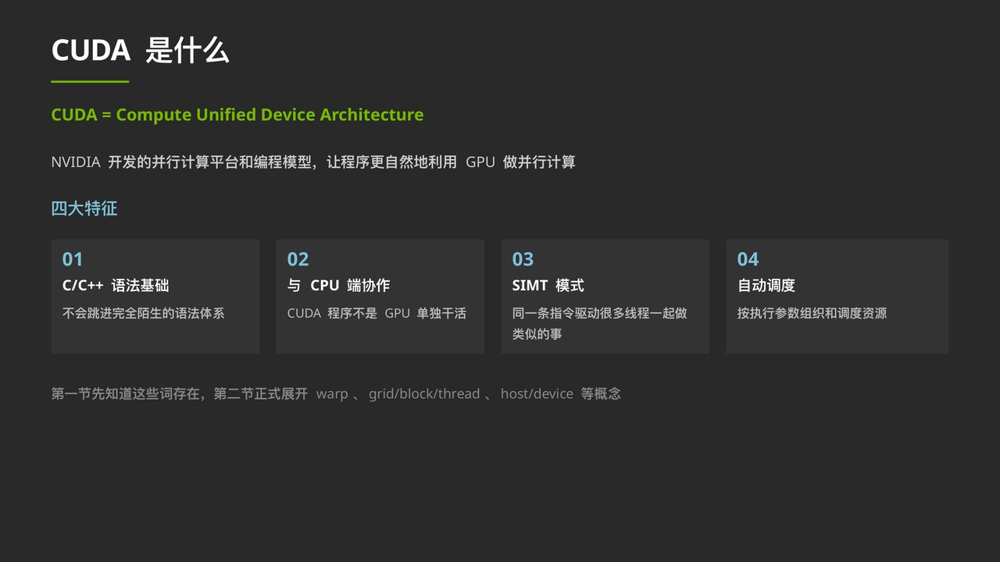
P21 · CUDA 是什么
硬件到编程入口
P21 · CUDA 是什么
可以先说：“这一页先把‘CUDA 是什么’讲清楚，后面的内容都从这个判断接出去。” 讲 CUDA 的角色：它是 NVIDIA 的并行计算平台和编程模型，让 C/C++ 程序能够组织 CPU 与 GPU 协作并启动 GPU 上的大量线程。
讲的时候按这条线推进：这一段只讲识别和入口，不讲编译产物细节。 这里会碰到的概念有 并行, CPU / GPU 分工, CUDA, Host / Device。
讲画面时，CUDA 定义页把平台、编程模型、C/C++ 基础和 GPU 协作放在一起，作用是从硬件过渡到编程入口。 不要让学生只看装饰，要指着图、代码或表格说明它在支撑哪一个判断。
这里要收住边界：nvcc 不是魔法词；它是处理 CUDA Host/Device 混合代码的编译链入口。 收尾时可以说：“这页先解决到这里，下一页我们把问题接到怎么认：.cpp / .cu 与 g++ / nvcc。”
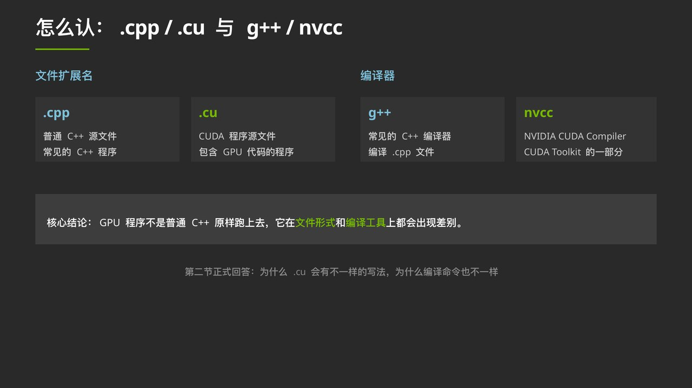
P22 · 怎么认：.cpp / .cu 与 g++ / nvcc
硬件到编程入口
P22 · 怎么认：.cpp / .cu 与 g++ / nvcc
可以先说：“这一页先把‘怎么认：.cpp / .cu 与 g++ / nvcc’讲清楚，后面的内容都从这个判断接出去。” 让学生先会识别文件和工具：普通 C++ 多见 .cpp 和 g++，CUDA 程序多见 .cu 和 nvcc，因为文件里同时会有 Host 和 Device 两侧内容。
讲的时候按这条线推进：这一段只讲识别和入口，不讲编译产物细节。 这里会碰到的概念有 CPU / GPU 分工, CUDA, nvcc。
讲画面时，文件后缀和编译器对照页用于建立识别能力：看到 .cu 和 nvcc 就知道进入 CUDA 编译链。 不要让学生只看装饰，要指着图、代码或表格说明它在支撑哪一个判断。
这里要收住边界：nvcc 不是魔法词；它是处理 CUDA Host/Device 混合代码的编译链入口。 收尾时可以说：“怎么认：.cpp / .cu 与 g++ / nvcc这件事先收住，下一段我们换一个层级继续看。”
P23 · 06
AI 为什么需要并行
P23 · 06
可以先说：“从这里开始进入AI 为什么需要并行这一段，先记住我们要解决的问题，再看下一页细节。” 切入 AI 动机，把前面的并行、GPU 和 CUDA 拉回现实应用，不展开模型算法，只解释为什么 AI 常常把 GPU 和算力推到前台。
讲的时候按这条线推进：不要讲成 AI 原理课，只讲规模、重复计算、训练和推理为什么需要并行。 这里只把 AI 当作并行需求的现实动机，不展开神经网络算法，也不进入性能账本。 这里会碰到的概念有 并行, CPU / GPU 分工, CUDA, Arithmetic Intensity。
讲画面时，这一页是“AI 为什么需要并行”的转场页，画面只负责把学生带入下一段，不需要在这里讲新知识。 不要让学生只看装饰，要指着图、代码或表格说明它在支撑哪一个判断。
这里要收住边界：参数多不自动等于所有环节都适合 GPU；仍然要看任务结构和数据流。 收尾时可以说：“这页先解决到这里，下一页我们把问题接到AI 模型为什么有很多层和很多参数。”
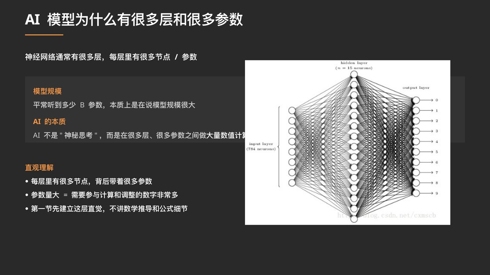
P24 · AI 模型为什么有很多层和很多参数
AI 为什么需要并行
P24 · AI 模型为什么有很多层和很多参数
可以先问学生：“看到‘AI 模型为什么有很多层和很多参数’，你们觉得真正卡住我们的是什么？” 讲 AI 模型规模：很多层、很多节点、很多参数意味着有大量重复数值计算，所谓多少 B 参数本质上是在提示计算规模很大。
讲的时候按这条线推进：不要讲成 AI 原理课，只讲规模、重复计算、训练和推理为什么需要并行。 这里只把 AI 当作并行需求的现实动机，不展开神经网络算法，也不进入性能账本。 这里会碰到的概念有 Arithmetic Intensity。
讲画面时，AI 模型规模页用层、节点、参数把“很多计算”具象化，不展开模型算法。 不要让学生只看装饰，要指着图、代码或表格说明它在支撑哪一个判断。
这里要收住边界：参数多不自动等于所有环节都适合 GPU；仍然要看任务结构和数据流。 收尾时可以说：“这页先解决到这里，下一页我们把问题接到AI 训练和推理都离不开并行计算。”
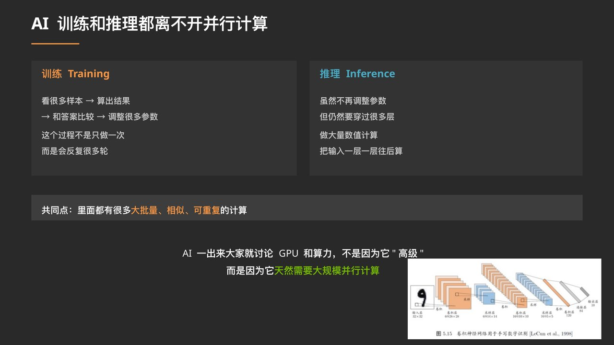
P25 · AI 训练和推理都离不开并行计算
AI 为什么需要并行
P25 · AI 训练和推理都离不开并行计算
可以先说：“这一页先把‘AI 训练和推理都离不开并行计算’讲清楚，后面的内容都从这个判断接出去。” 讲训练和推理都需要并行：训练要反复看样本、算结果、比较答案、调整参数；推理不调参数，但仍要穿过很多层做大量计算。
讲的时候按这条线推进：不要讲成 AI 原理课，只讲规模、重复计算、训练和推理为什么需要并行。 这里只把 AI 当作并行需求的现实动机，不展开神经网络算法，也不进入性能账本。 这里会碰到的概念有 并行, Arithmetic Intensity。
讲画面时，训练/推理流程页把大量重复数值计算和并行需求连起来，作为现实动机收束。 不要让学生只看装饰，要指着图、代码或表格说明它在支撑哪一个判断。
这里要收住边界：参数多不自动等于所有环节都适合 GPU；仍然要看任务结构和数据流。 收尾时可以说：“AI 训练和推理都离不开并行计算这件事先收住，下一段我们换一个层级继续看。”
P26 · 07
收束与预告
P26 · 07
可以先说：“从这里开始进入收束与预告这一段，先记住我们要解决的问题，再看下一页细节。” 进入第一节收束，提醒学生后面不再添加新概念，而是把刚才的判断压成第二节写代码前的入口。
讲的时候按这条线推进：用五句话收束：并行判断、CPU/GPU 匹配、GPU 特点、CUDA 入口、第二节代码。 这里不需要额外展开新术语，重点是把页面角色讲清楚。
讲画面时，这一页是“收束与预告”的转场页，画面只负责把学生带入下一段，不需要在这里讲新知识。 不要让学生只看装饰，要指着图、代码或表格说明它在支撑哪一个判断。
这里要收住边界：结尾不再发散，不提前讲第二节所有细节。 收尾时可以说：“这页先解决到这里，下一页我们把问题接到第一节收束与第二节预告。”
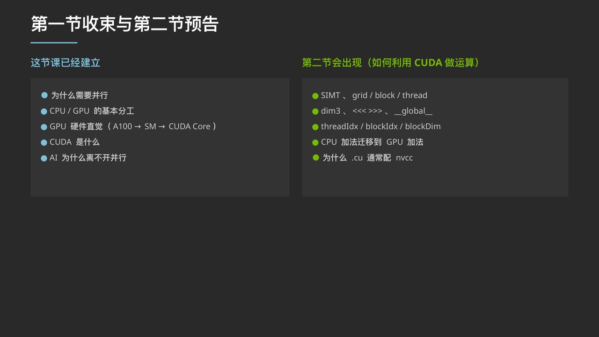
P27 · 第一节收束与第二节预告
收束与预告
P27 · 第一节收束与第二节预告
可以先说：“我们把今天真正要带走的话压成几句，后面的课就接在这些判断上。” 把第一节带走的东西压缩成几句话：并行看能不能拆，CPU/GPU 看任务匹配，GPU 适合大量相似计算，CUDA 是进入 GPU 编程的入口。
讲的时候按这条线推进：用五句话收束：并行判断、CPU/GPU 匹配、GPU 特点、CUDA 入口、第二节代码。 讲硬件名词时只讲到支撑后续 CUDA 直觉的程度，不提前打开 warp、memory hierarchy 或性能细节。 这里会碰到的概念有 并行, 核心, CPU / GPU 分工, SM, CUDA Core。
讲画面时，总结页把第一节压成第二节入口，作用是让学生带着 Host/Device 和 CUDA 编程问题进入下一课。 不要让学生只看装饰，要指着图、代码或表格说明它在支撑哪一个判断。
这里要收住边界：CUDA Core 不能和 CPU core 一比一比较，这里只建立 GPU 靠大量单元工作的直觉。 收尾时可以说：“这页先解决到这里，下一页我们把问题接到有问题随时提问。”
P28 · 有问题随时提问
收束与预告
P28 · 有问题随时提问
可以先问学生：“看到‘有问题随时提问’，你们觉得真正卡住我们的是什么？” 结束时保留提问，并明确下节课会正式看到 add_cpu.cpp、add_cuda.cu、Host/Device、Thread/Block/Grid、dim3、<<< >>> 和 nvcc。
讲的时候按这条线推进：用五句话收束：并行判断、CPU/GPU 匹配、GPU 特点、CUDA 入口、第二节代码。 这里只把 AI 当作并行需求的现实动机，不展开神经网络算法，也不进入性能账本。 这里会碰到的概念有 CUDA。
讲画面时，画面要服务“收束与预告”这一段的主问题；讲的时候直接指向标题、图示或代码块里最关键的对象。 不要让学生只看装饰，要指着图、代码或表格说明它在支撑哪一个判断。
这里要收住边界：结尾不再发散，不提前讲第二节所有细节。 收尾时可以说：“这一节到这里先停住，后面的问题就是把今天的判断继续落到下一节或后续练习里。”
本 HTML 大纲按发布 PPT 逐页对照整理；预览图来自当前发布 PPT 或 Lesson 03/04 的已生成 origin_image。它用于向导师说明每页讲什么和为什么这样设计，不替代课堂逐字稿。